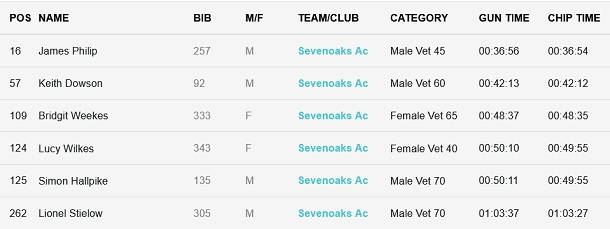

Six SAC runners skipped Jim's trail run on Sunday 30th July to contest the East Peckham 10k, with excellent age category results. The course was flat, the weather was favourable - if a bit windy, and the results came in 5-year categories up to W70/M80. Jamie Philip was 2nd M45, Keith Dowson 2nd M60, Bridgit Weekes 2nd W65, Lucy Wilkes 2nd W40, Simon Hallpike 1st M70 and Lionel Stielow 6th M70.
The SAC times were:

The full results are here.